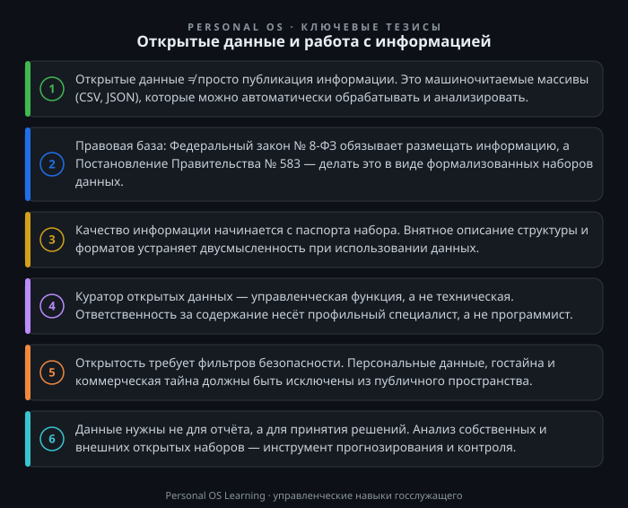

Введение
В эпоху цифровой трансформации государственного управления информация перестала быть просто ресурсом — она стала основным активом. Граждане, бизнес и сами органы власти ежедневно оперируют колоссальными объемами данных: от статистики социально-экономического развития до реестров административных процедур. Однако наличие информации не равно её полезности. Ценность приобретает только та информация, которая опубликована в понятном формате, доступна для анализа и пригодна для принятия решений.
Для государственного служащего тема открытых данных — это не абстрактная «модная тенденция», а конкретное должностное требование. От того, как мы публикуем сведения о деятельности ведомства, зависит доверие граждан, качество обратной связи и эффективность межведомственного взаимодействия. Более того, работа с данными напрямую влияет на управленческие компетенции: невозможно качественно планировать развитие отрасли, не имея достоверной аналитики. Эта статья поможет вам систематизировать знания об открытых данных, понять правовые основы и, главное, освоить практические инструменты, которые можно применить уже завтра на вашем рабочем месте.
Прежде чем говорить об инструментах, разграничим понятия. Открытые данные — это информация, которую орган власти публикует в машиночитаемом формате (CSV, JSON, XML) с целью её свободного использования любыми лицами. Ключевое отличие от простой публикации новостей или отчётов на сайте — пригодность для автоматической обработки. Если документ опубликован в формате PDF, это просто оцифрованный текст. Если тот же массив информации выгружен в формате структурированной таблицы, это уже открытые данные, которые можно загрузить в аналитическую программу и сопоставить с другими источниками.
Правовую основу составляют:
Разбор:
Рассмотрим ситуацию. Ваш отдел статистики ежеквартально готовит сводный отчёт о результатах проверок. Если вы выложите на сайт файл Word или PDF — формально вы исполнили требование о «размещении информации». Но если вы выложите ту же выборку в виде таблицы Excel/CSV с колонками «Дата проверки», «Объект», «Выявленные нарушения», «Выданные предписания», — вы создали ценный набор открытых данных. Журналисты смогут построить на его основе расследование, а проверяющие органы — провести собственный анализ динамики нарушений, не запрашивая у вас справку. Таким образом, вы переходите от транзакции «отчитался» к управленческому воздействию.
Работа с открытыми данными часто воспринимается как функция профильного IT-отдела. Это распространённое заблуждение. IT-специалисты отвечают за техническую платформу (сайт, портал), но содержательную часть — за то, какие данные попадут в публичное поле и насколько они достоверны, — определяют профильные специалисты.
В каждом органе власти должен быть определён куратор открытых данных. Его задачи:
Инструмент: «Реестр наборов данных».
Даже если в вашем ведомстве нет формализованной должности «куратора», вы можете взять на себя роль координатора. Составьте реестр из трёх колонок: «Какие данные мы производим», «Где они хранятся», «Кто ответственный». Это займёт 30 минут, но даст немедленный результат — карту информационных потоков. Вы увидите, какие данные пересекаются с другими отделами, и сможете устранить дублирование.
Переходим к конкретике. Главный документ для любого набора данных — его паспорт. Это метаописание, которое позволяет пользователю понять, что за информация перед ним, не открывая сам файл. В паспорте обязательно должны быть:
Почему это важно? Представьте, что вы аналитик. Вы нашли на сайте ведомства файл «Данные по инвестициям v3_final.csv». Внутри — колонки «№ п/п», «Показатель», «Значение» без указания единиц измерения: это рубли, тысячи рублей или проценты? Без паспорта данные бесполезны. Более того, они вводят в заблуждение, что критично при принятии управленческих решений. Всегда сопровождайте выгрузку файла пояснительной запиской — это признак высокой информационной культуры госслужащего.
Открытые данные — это не конечная цель, а исходное сырьё для управленческой работы. Рассмотрим, как госслужащий может использовать открытые данные в повседневной деятельности.
Вы получаете из канцелярии жалобы на качество работы МФЦ. Вместо того чтобы читать каждое обращение, вы выгружаете за год все обращения в таблицу и строите дашборд по темам и районам. Результат: выявляется устойчивый кластер жалоб на один конкретный филиал по вопросу «Запись к врачу через терминал». Вместо «работы с потоком» вы переходите к «работе с причинами» — это и есть управленческая компетенция. Открытые данные (например, статистика обращений, опубликованная госорганом) позволяют сравнить ситуацию с соседними регионами и найти лучшие практики.
Надзорные органы публикуют планы проверок на год. Для органа местного самоуправления это не просто «фоновая информация», а инструмент планирования. Проанализировав план надзорного органа, вы можете заранее подготовить документы для подведомственных учреждений, предотвратить штрафные санкции и синхронизировать внутренние аудиты. Это превращает открытые данные в элемент правового мониторинга.
Для работы с большими массивами не обязательно владеть языками программирования. Достаточно освоить сводные таблицы Excel (навык, который должен быть у каждого руководителя) или базовые функции Google Sheets. Если ваш орган использует отечественные офисные пакеты, общие принципы работы сохраняются: фильтры, индексы, срезы — меняются лишь названия пунктов меню, а логика обработки табличных данных остаётся единой.
Опыт аудита сайтов госорганов показывает повторяющиеся нарушения. Знание этих «граблей» — половина успеха.
Ошибка 1: «Мусорные» форматы. Файлы в формате JPEG — это не данные. Это фотографии таблиц.
Решение: Требуйте от исполнителей выгрузку в CSV или Excel. Для юридически значимых документов используйте PDF/A, но отдельно прикладывайте машиночитаемую копию.
Ошибка 2: Неактуальность. На сайте висит информация трёхлетней давности, но дата обновления не указана.
Решение: Установите в должностных регламентах требование указывать «Дату последнего обновления» на странице публикации. Сотрудник, разместивший файл, несёт ответственность за его жизненный цикл.
Ошибка 3: Разрозненность. Данные лежат в разных разделах сайта, и найти их может только сотрудник этого органа.
Решение: Используйте Перечень общедоступной информации — документ, который должен быть опубликован в структуре сайта. Это своего рода «навигатор» для пользователя. Данные должны быть доступны в два клика от главной страницы, либо на странице структурного подразделения, либо в специальном разделе «Открытые данные».
Ошибка 4: Смешение уровней детализации. Когда в одной таблице объединены данные по районам и по отдельным учреждениям без указания уровня, нарушается логика выборки.
Решение: Разделяйте наборы. Любой пользователь должен иметь возможность «срезать» данные до нужного уровня, не перестраивая всю таблицу.
Критически важный аспект — баланс между открытостью и ограничениями. Публикация открытых данных не должна нарушать закон о персональных данных. Перед выгрузкой информационной базы необходимо провести деперсонализацию: удалить ФИО, адреса, контактные телефоны граждан, если только это не предусмотрено специальным законом (например, данные о доходах чиновников публикуются в строго установленном порядке).
Чек-лист перед публикацией набора:
Помните: ответственность за публикацию незаконной информации несёт конкретное должностное лицо. Всегда фиксируйте в служебной записке решение о публикации. Ставьте себя на место пользователя: если данные нельзя использовать без риска судебного иска, лучше их не публиковать.
Предлагаю вам выполнить упражнения, которые займут не более 20-30 минут, но принесут немедленную пользу вашему подразделению. Желательно выполнять их последовательно, фиксируя результаты на бумаге или в электронном блокноте.
Задание 1. Аудит вашего сайта (15 минут)
Откройте официальный сайт вашего органа власти. Найдите раздел, посвящённый вашему направлению деятельности (например, «Жилищно-коммунальное хозяйство» или «Социальная защита»). Выпишите три документа, которые опубликованы в формате PDF или JPEG и содержат структурированные показатели (перечень показателей по кварталам, статистика обращений). Сформулируйте, какие из этих данных можно перевести в формат XLSX/CSV. Запишите свои предложения в виде короткой служебной записки на имя руководителя. Вы удивитесь, что через неделю — месяц эта записка может лечь в основу оптимизации сайта.
Задание 2. Создание паспорта набора (20 минут)
Возьмите один из самых популярных отчётов вашего отдела (тот, который чаще всего запрашивают по официальным запросам). Составьте его паспорт по схеме:
Если окажется, что структура данных каждый раз плавает («то мы включаем графу, то нет») — это сигнал о необходимости регламента. Приложите паспорт к списку задач на планерке.
Задание 3. Обратная связь от «пользователя» (10 минут)
Представьте себя журналистом регионального издания. Вам нужны данные о количестве выданных разрешений на строительство за последний год. Найдите на сайте вашего органа (или сайта муниципалитета) подобный отчёт. Оцените его по шкале от 1 до 5 по трём параметрам:
Если оценка меньше 3 по любому параметру — запишите, что можно улучшить. Это ваш план работы на одну неделю.
Вывод
Открытые данные — это не дополнительная нагрузка на госслужащего, а способ вернуть себе время и повысить качество решений. Честная, своевременная и машиночитаемая информация снижает количество межведомственных запросов, уменьшает поток необоснованных жалоб (граждане видят объективную картину) и позволяет перейти от реактивного управления к предиктивному. Начните с малого: наведите порядок в одном наборе данных, составьте его паспорт и посмотрите, как изменится отношение и внутренних коллег, и внешних пользователей к вашей работе. Системная работа с информацией — это базовая опора управленческой компетенции современного руководителя на государственной службе.

Открыть инфографику в полном размере ↗
Отправить отметку в базу Пройти тест по теме